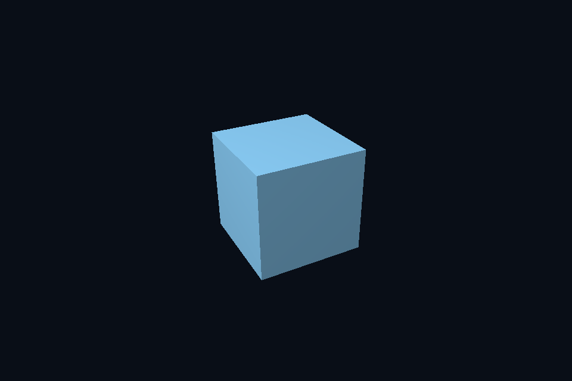

第 29 课 · 描述符布局与资源接口声明 · Vulkan 原生
54 课目录 · 对照精讲 · 上一课 · 下一课
本课目标与先修
学习目标：解释“描述符布局与资源接口声明”解决的问题，找到实际对象和参数，运行对应实验并用数据/画面证明。先完成前一课，并能说明它交付的对象与完成条件；本课在该依赖上增加新契约。
为什么需要这一层
接口声明说明需要哪些资源、在哪个阶段、数量和类型；实际绑定说明此刻引用哪一份内容。布局通常可复用，资源引用会变化，数据字节又按自己的频率更新。
Vulkan 原生 的对象、参数与执行推导
DescriptorSetLayoutBinding 连接 shader binding 与资源类型/阶段；PipelineLayout 组合 set layout 和 push range。它不是 descriptor pool，也不拥有 buffer。绑定错误不能通过只更新 buffer 内容修复。
对照 DirectX 12：相同问题的另一种分工
root signature 组合 root constants、root descriptor 和 descriptor table。parameter 2 可以指 t0，register space 又是独立维度。显式说明接口约定，才能检查 shader 与调用是否兼容。
关键参数与可检查不变量
先为每项指出源码中的创建/绑定位置，以及证明它成立的实际日志、字节或图像。数值中的设备限制以查询为准；固定实验尺寸不当作所有设备的上限。
nvpro_core2 框架对照
SceneVk 使用原生 layout/set；Context 与 Application 不自动推导自定义 shader 的资源接口。
这部分是原生 Vulkan 各课的框架对照，框架可运行入口仍为原有六课。如果本节需要新接入工作，会按正文说明；不把原生实验当作已完成的框架实现。
运行与实际检查
从合集根目录执行；普通图形程序 Esc 退出，设备/计算/诊断程序输出结果后结束。从“开始学习.cmd”进入本页时，表格可直接点击运行。
cmake --preset vulkan-native
cmake --build --preset vulkan-native-debug --target vk05_indexed_uniform --parallel 4
.\Vulkan\native\build\bin\Debug\vk05_indexed_uniform.exe
ctest --preset vulkan-native-debug -R "^vk05_indexed_uniform$" --output-on-failure
检查三个层次：创建/绑定/提交的接口约束；数据读回或目标画面；资源使用结束后的回收。诊断实验用合法信息或查询证明渠道可用，不故意保留 API 错误。图形 smoke 的像素检查与数值实验的逐项检查不同，具体实现见源码。
关键实现：从当前源码定位
来自 Vulkan/common/scene_vk.hpp，第 282—325 行。下列是当前仓库的局部切片，可能在函数中间结束；完整上下文请打开文件，切片不作为单独可编译程序。
VkDescriptorSetLayoutBinding bindings[2] = {
{0, VK_DESCRIPTOR_TYPE_UNIFORM_BUFFER, 1, VK_SHADER_STAGE_VERTEX_BIT, nullptr},
{1,
VK_DESCRIPTOR_TYPE_COMBINED_IMAGE_SAMPLER,
1,
VK_SHADER_STAGE_FRAGMENT_BIT,
nullptr}};
VkDescriptorSetLayoutCreateInfo li{VK_STRUCTURE_TYPE_DESCRIPTOR_SET_LAYOUT_CREATE_INFO};
li.bindingCount = 2;
li.pBindings = bindings;
vkCheck(vkCreateDescriptorSetLayout(c.device, &li, nullptr, &setLayout));
VkDescriptorPoolSize sizes[2] = {{VK_DESCRIPTOR_TYPE_UNIFORM_BUFFER, 1},
{VK_DESCRIPTOR_TYPE_COMBINED_IMAGE_SAMPLER, 1}};
VkDescriptorPoolCreateInfo pool{VK_STRUCTURE_TYPE_DESCRIPTOR_POOL_CREATE_INFO};
pool.maxSets = 1;
pool.poolSizeCount = 2;
pool.pPoolSizes = sizes;
vkCheck(vkCreateDescriptorPool(c.device, &pool, nullptr, &descriptorPool));
VkDescriptorSetAllocateInfo da{VK_STRUCTURE_TYPE_DESCRIPTOR_SET_ALLOCATE_INFO};
da.descriptorPool = descriptorPool;
da.descriptorSetCount = 1;
da.pSetLayouts = &setLayout;
vkCheck(vkAllocateDescriptorSets(c.device, &da, &descriptor));
VkDescriptorBufferInfo ub{uniform.buffer, 0, sizeof(Frame)};
VkDescriptorImageInfo image{
sampler, texture.view, VK_IMAGE_LAYOUT_SHADER_READ_ONLY_OPTIMAL};
VkWriteDescriptorSet writes[2]{};
for (auto& w : writes) {
w.sType = VK_STRUCTURE_TYPE_WRITE_DESCRIPTOR_SET;
w.dstSet = descriptor;
w.descriptorCount = 1;
}
writes[0].descriptorType = VK_DESCRIPTOR_TYPE_UNIFORM_BUFFER;
writes[0].pBufferInfo = &ub;
writes[1].dstBinding = 1;
writes[1].descriptorType = VK_DESCRIPTOR_TYPE_COMBINED_IMAGE_SAMPLER;
writes[1].pImageInfo = ℑ
vkUpdateDescriptorSets(c.device, 2, writes, 0, nullptr);
// push constants 存放每次绘制的小块数据，更新时不需要再分配 descriptor set。
VkPushConstantRange push{
VK_SHADER_STAGE_VERTEX_BIT | VK_SHADER_STAGE_FRAGMENT_BIT, 0, sizeof(Draw)};
VkPipelineLayoutCreateInfo pl{VK_STRUCTURE_TYPE_PIPELINE_LAYOUT_CREATE_INFO};
pl.setLayoutCount = 1;
阅读时按“前置对象 → 参数/布局 → 录制/调用 → 完成/可见性 → 释放”五步标注。共享 helper 减少重复代码，但不会取消每课的 API 契约。
受控修改实验
为一个每帧相机、每材质纹理、每对象 model 的场景设计更新频率划分。
先记录预测，再只改一个因素；保留基线与修改后的输出。不要同时改变 shader、资源范围和同步，这样即使结果变好也无法归因。
参考推导与通过标准
按帧更新 Frame，按材质选择纹理引用，按 draw 更新 model 小常量。不要每 draw 重建全部布局，也不把大型场景数据塞进 push/root constants。
常见失败与排查顺序
把 binding location、root parameter、HLSL register 和 heap offset 当成同一个整数系统，会产生看似相近却错误的绑定。
先看第一条错误和当前执行路径，再看实际数据/绑定，最后看 shader 与画面。需要 GPU 证据时抓取正常交互帧；仅四帧的 smoke 适合自动检查，不适合手动抓帧。
自测与本课交付
能否不看源码回答：为一个每帧相机、每材质纹理、每对象 model 的场景设计更新频率划分。
提交一份简短记录：输入与假设、唯一修改、预期、实际证据、原因、是否恢复基线。如果只能复述函数名而说不清何时允许访问/释放，先回到本课的数据流。
官方阅读位置与当前工程差异
指定 Vulkan 教程对应位置。DX12 路线按同一概念顺序建立映射，其对象与约束以 Microsoft 文档和本后端代码为准。49—54 课包含在基础/compute 之后加入的工程扩展。
版本与资料说明 · 调试 · 功能完成度
固定输入的实际 GPU 读回
